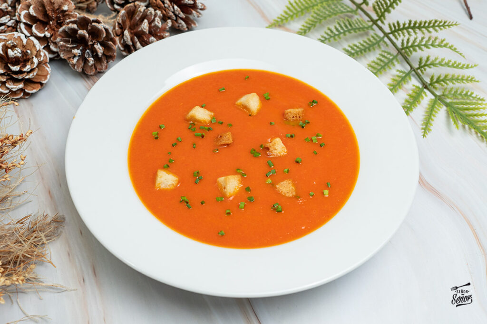
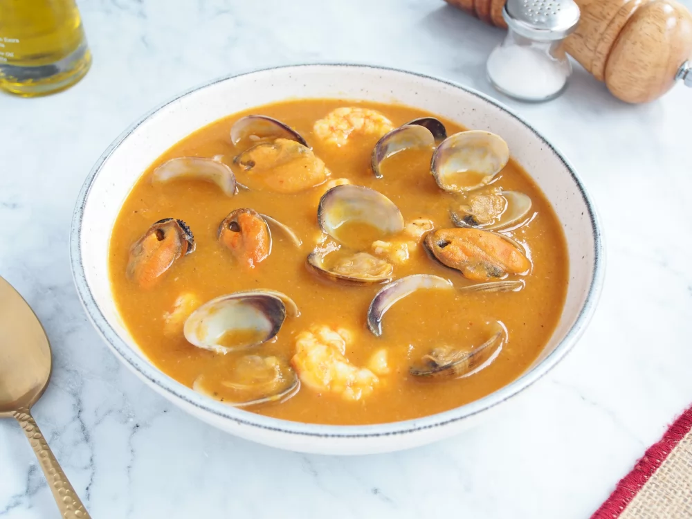
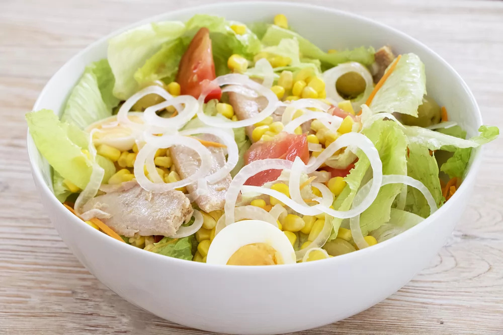
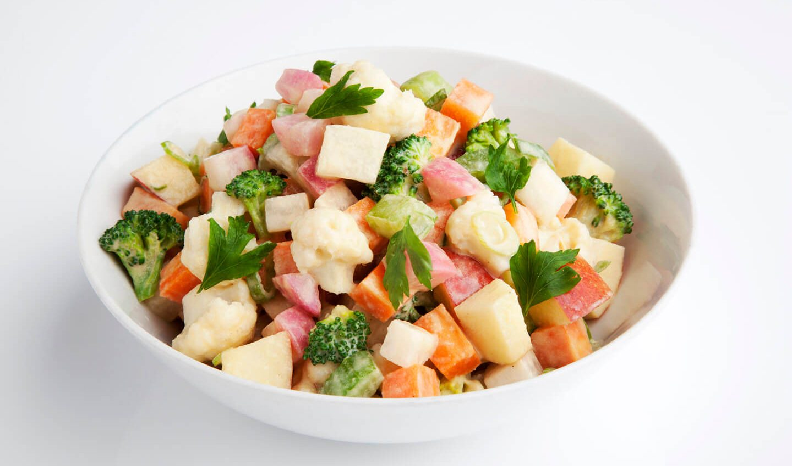

La sopa de tomate es un forma ideal de consumir tomates y para mi es perfecta ya que ahora que viene el mal tiempo en pleno otoño apetecen recetas de sopas para combatir el frío, para mi la mejor para el frío, la sopa de ajo.

Ingredientes:
Tomates pera maduros (1 kg)
Cebolla (1)
Diente de ajo (1)
Pimiento rojo (1)
Caldo de verduras o caldo de pollo
Sal
Azúcar (1 cucharada)
Hoja de laurel (1)
Aceite de oliva virgen extra
Sopa de marisco
En esta receta, vamos a hacer una sopa de marisco tradicional, ideal para preparar en ocasiones especiales. A continuación, te enseñamos el paso a paso para que te quede deliciosa.

Ingredientes (para 4 personas):
Almejas (400 g)
Sal
Pescado de roca o de morralla (500 g)
Langostinos (300 g)
Dientes de ajo (6)
Cebolla (300 g)
Puerro (159 g)
Zanahoria (200 g)
Aceite de oliva (80 g)
Vino blanco (175 ml)
Agua (2 l)
Pimiento verde (100 g)
Postre de pulpa de pimiento choricero (1 cucharada)
Tomate triturado (100 g)
Pimienta negra molida
Pan (50 g)
Mejillones (500 g)
Ensalada mixta
Ligera, sabrosa y refrescante. La ensalada de la casa por excelencia, protagonista indiscutible de los menús del día veraniego. Perfecta para abrir boca.

Ingredientes (4 personas)
Lechuga romana (1)
Tomates de ensalada maduros (2)
Cebolla pequeña (1)
Zanahoria pequeña (1)
Huevos cocidos (2)
Maíz dulce en conserva (140 g)
Atún en conserva (70 g)
Aceitunas sin hueso (50 g)
Aceite de oliva virgen extra
Vinagre
Sal al gusto
Ensalada de verduras al vapor
¡Una deliciosa ensalada con muy bajas calorías!

Tazas de coliflor (0,5) y/o taza de brócoli (1), cortados en flores pequeña
Taza de bulbos de hinojo, cortados en cubos (1)
zanahorias medianas, cortadas en cubos pequeños (2)